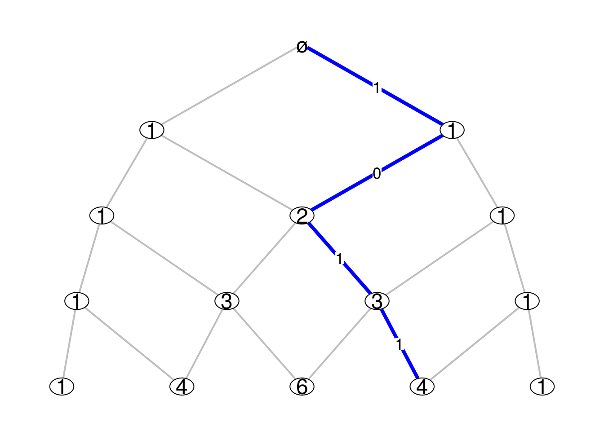

-
Intrinsic kernels and distances on a Bratteli graph
2016-01-14
SourceOn every Bratteli graph there is an intrinsic family of Markov kernels, which are also called the central kernels. Consider for example the Pascal graph below, where the integer shown at each vertex is the number of paths from this vertex to the root vertex \(\varnothing\):

Consider the levels of the graph are indexed by the negative integers, the level \(n=0\) being the one of the root vertex. Thus, for the example of the Pascal graph, there are \(|n|\) vertices at level \(n\). We denote by \({\boldsymbol V}_n\) the set of vertices at level \(n\).
The intrinsic family of Markov kernels is the familiy of Markov kernels \({(P_n)}_{n \leq -1}\) such that the source and the target of \(P_n\) respectively are \({\boldsymbol V}_n\) and \({\boldsymbol V}_{n+1}\) and which are characterized by the following conditions:
for each vertex \(v_n \in {\boldsymbol V}_n\), the support of the probability \(P_n(v_{n}, \cdot)\) is the set of vertices at level \(n+1\) which are connected to \(v_n\);
for every integer \(n_0 \leq -1\) and every vertex \(v_{n_0} \in {\boldsymbol V}_{n_0}\), if \((v_{n_0}, V_{n_0+1}, \ldots, V_0)\) is a Markov vector with initial value \(v_{n_0}\) and transition distributions \(\Pr(V_{n+1} \in \cdot {\mid}V_n=v_n) = P_n(v_n, \cdot)\), then the path defined by its trajectory has the uniform distribution on the set of paths going from \(v_{n_0}\) to the root vertex \(\varnothing = V_0\).
Thus \(P_n(v_{n}, \cdot)\) is explicitely given by \[ \boxed{P_n(v_{n}, v_{n+1}) = \dfrac{\dim(v_{n+1})}{\dim(v_n)}} \] where the dimension \(\dim(v)\) of a vertex \(v\) is the number of paths from a vertex \(v\) to the root vertex \(\varnothing\).
Computing the intrinsic kernels
When a function
Mn.funreturns the incidence matrices of the Bratteli graph, it is not difficult to get the dimensions of the vertices and then the intrinsic Markov kernels. The function below does this job. I use thegmppackage to get the results in big rationals.library(gmp) centralKernels <- function(Mn.fun, N){ L <- Kernels <- vector("list", N-1) # initialization k <- 0 M <- Mn.fun(k) m <- nrow(M); n <- ncol(M) if(m != 1) stop("M0 must have only one row") dims0 <- as.vector(as.bigz(M)) Kernels[[k+1]] <- matrix(as.character(dims0), dimnames=list(1:n, 1:m)) for(k in 1:(N-1)){ M <- Mn.fun(k) m <- nrow(M); n <- ncol(M) S <- lapply(1:ncol(M), function(i) which(M[,i]!=0)) dims <- as.vector(dims0%*%M) P <- lapply(1:n, function(i){ as.character(dims0[S[[i]]]*M[S[[i]],i]/dims[i]) }) Kernels[[k+1]] <- matrix("0", nrow=n, ncol=m, dimnames=list(1:n,1:m)) for(i in 1:n){ Kernels[[k+1]][i,][S[[i]]] <- P[[i]] } dims0 <- dims } return(Kernels) }I try it below for the example of the Pascal graph. Recall that \(M_0\) must always be a row matrix of ones.
Pascal_Mn <- function(n){ M <- matrix(0, nrow=n+1, ncol=n+2) for(i in 1:(n+1)){ M[i,][c(i,i+1)] <- 1 } return(M) } Pascal_Mn(0) ## [,1] [,2] ## [1,] 1 1( ckernels <- centralKernels(Pascal_Mn, 4) ) ## [[1]] ## 1 ## 1 "1" ## 2 "1" ## ## [[2]] ## 1 2 ## 1 "1" "0" ## 2 "1/2" "1/2" ## 3 "0" "1" ## ## [[3]] ## 1 2 3 ## 1 "1" "0" "0" ## 2 "1/3" "2/3" "0" ## 3 "0" "2/3" "1/3" ## 4 "0" "0" "1" ## ## [[4]] ## 1 2 3 4 ## 1 "1" "0" "0" "0" ## 2 "1/4" "3/4" "0" "0" ## 3 "0" "1/2" "1/2" "0" ## 4 "0" "0" "3/4" "1/4" ## 5 "0" "0" "0" "1"Computing the intrinsic distances
Once one has the central kernels, one can compute the intrinsic distances, as defined in the paper Standardness of monotonic Markov filtrations, with the help of the kantorovich package. I provide the code below.
library(kantorovich) ## Warning: replacing previous import by 'gmp::apply' when loading ## 'kantorovich' ## Warning: replacing previous import by 'gmp::as.bigq' when loading ## 'kantorovich' RHO <- lapply(ckernels, function(kernel) matrix("", nrow=nrow(kernel), ncol=nrow(kernel))) RHO[[1]] <- (diag(2) + 1) %% 2 n <- length(ckernels)-1 for(k in 1:n){ diag(RHO[[k+1]]) <- "0" K <- nrow(RHO[[k+1]]) kernel <- ckernels[[k+1]] for(i in 1:(K-1)){ for(j in (i+1):K){ RHO[[k+1]][i,j] <- RHO[[k+1]][j,i] <- as.character(kantorovich(as.bigq(kernel[i,]), as.bigq(kernel[j,]), dist = RHO[[k]])) } } } RHO ## [[1]] ## [,1] [,2] ## [1,] 0 1 ## [2,] 1 0 ## ## [[2]] ## [,1] [,2] [,3] ## [1,] "0" "1/2" "1" ## [2,] "1/2" "0" "1/2" ## [3,] "1" "1/2" "0" ## ## [[3]] ## [,1] [,2] [,3] [,4] ## [1,] "0" "1/3" "2/3" "1" ## [2,] "1/3" "0" "1/3" "2/3" ## [3,] "2/3" "1/3" "0" "1/3" ## [4,] "1" "2/3" "1/3" "0" ## ## [[4]] ## [,1] [,2] [,3] [,4] [,5] ## [1,] "0" "1/4" "1/2" "3/4" "1" ## [2,] "1/4" "0" "1/4" "1/2" "3/4" ## [3,] "1/2" "1/4" "0" "1/4" "1/2" ## [4,] "3/4" "1/2" "1/4" "0" "1/4" ## [5,] "1" "3/4" "1/2" "1/4" "0"I hope this will help the people working on the theory of standard filtrations.
- Home
- About
- PoirotReproducible Blogging with R Markdown
- SlidifyReproducible html5 slides from R markdown
- R-bloggersBlog posts about R, contributed by R bloggers worldwide.
- stla.overblogMy previous blog
- Timely Portfolio A great blog about R, Javascript, and more